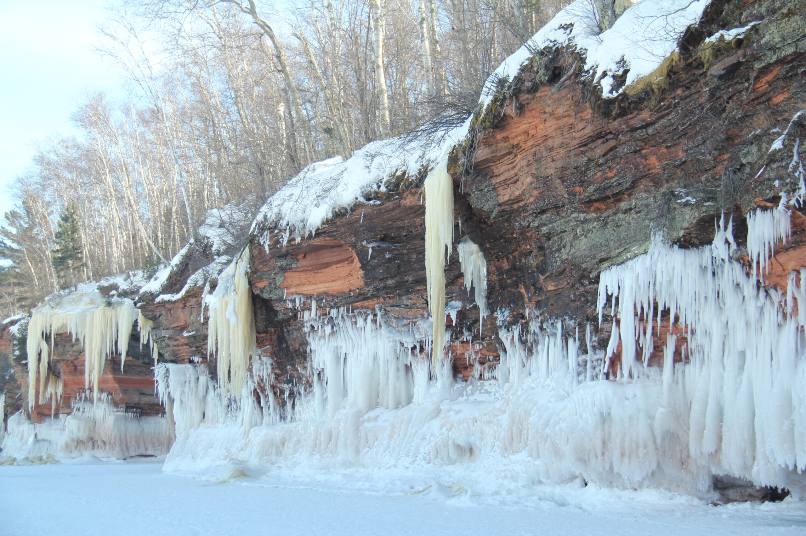
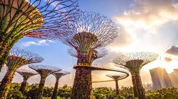
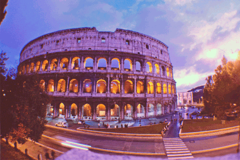

Apostle Islands, WI


The Apostle Islands are a collection of 22 islands in Lake Superior located in the northern region of Wisconsin, USA. Originally inhabited by the Ojibwe (Chippewa) people, the islands contain over hundreds of years worth of rich Native American history. In 1970, 21 of the islands and the surrounding waters were designated as the Apostle Islands National Lakeshore, a protected area managed by the National Park Service. Lastly, the islands are home to a diverse range of wildlife, including, white-tailed deer, black bears and various bird species.
There are six lighthouses spread across the islands, making it one of the largest collections of lighthouses in the United States. When the island receives visitors it is viewed as a popular destination for outdoor activities such as kayaking, sailing, hiking and camping. In addition, many people enjoy other activities such as berry picking. Camping is also allowed in 19 of the 21 islands to date.
Photo Gallery
In winter, when the lake freezes, the sea caves turn into ice caves. This can create a magical, otherworldly landscape!

Apostle Islands Lighthouses

Apostle Islands Wildlife

Apostle Islands Wildlife

Apostle Islands Plantation
Singapore
 Asia
Asia
Singapore is a country located at the southern end of Malaysia. Despite the fact that Singapore is only 281.3 square miles and has a population of approximately 5.54 million, it has a thriving economy and is a strong player in the global market
Singapore is famous for its city skyline, with a few landmarks such as the Marina Bay Sands Resort, Raffles Hotel, and the Esplanade. Additionally, Singapore has the highest rated airport in the world, with Changi Airport featuring many retail and dining options.
Photo Gallery

Hawker centres are a staple in singaporeans food culture. affordable food stalls run by elderly experienced cooks. You can find anything from any of the 4 main cultures in singapore (chinese, malay, indian and “western”)

Changi airport is consistently ranked as the best airport in the world, for its cleanliness, efficiency and shopping/dining options. It’s main feat is Jewel’s water feature.
These big gardens were built a few years ago and emphasise the idea that singapore is a “Garden City”. The trees light up at night and are a common location for photoshoots, night walks and weddings.

Pulau Ubin is a nature reserve island off the coast of Singapore. It is a popular destination for a day filled with hiking, kayaking among mangroves, biking on nature trails, and observing wildlife like crocodiles, monkeys and wild boar.

Sentosa is an island off the south coast of singapore. It hosts Universal Studios, casinos and beach resorts. It is Singapore’s vacation island. There are lots of white sandy beaches, hikes, beachfront restaurants and other attractions that are visited by tourists and locals alike
Rome, Italy

Geographical Location: Europe
The national capital of Italy remains a historical and political hub today. Nicknamed the “Eternal City,” Rome is considered the origination of the Catholic Church and Roman civilization central to the development of the Western World. Divided into 22 walled rioni (districts) surrounded by 35 quartieri urbani (urban sectors) that are surrounded by 6 large suburbi (suburbs), the city, just larger than New York City at an area of 496 mi2, is home to 2.8 million residents. Its economy runs on the tourism and services industries, the latter mostly in government jobs.
The Via del Corso, named after Roman carnival horse races, is the main street that runs through Rome. Many significant churches, palaces, and squares run along this road (Piazza del Popolo, and the Spanish Steps in Piazza di Spagna, for example). The seven hills that surround Rome are trenched with mythological history which can be seen through the prevalence of temples. Must see landmarks for those traveling include the Colosseum, Roman Forum, Pantheon, and Catacombs. St. Peter’s Square & Basilica and the Sistine Chapel, technically located within Vatican City – an independent city-state within Rome – are also worth a visit.
Photo Gallery


Zion National Park


Geographical Location: North America
Found in southwestern Utah, Zion National Park spreads over 229 square miles. The park is known for its sandstone cliffs, deep canyons, and vast mesas, giving it a unique beauty that everyone should try to experience . Along with this Zion offers a wide variety of Flora and Fauna that differs each season making it a hot destination all year round.
Having over 112 trails available to hike, walk, and even camp at, people from all over the world are traveling to Zion to see just how amazing it truly is. With trails that range from riverside walks all the way to hikes that have you scaling long bluffs to reach a peak, Zion has something that every outdoorsman can enjoy. However it is not all sunshines and rainbows, and there are dangers that come with these trails that all hikers should read and learn about before their expedition.
Photo Gallery


Ebenalp Mountain, Switzerland


Geographical Location: Central Europe
Ebenalp Mountain graces Switzerland's Appenzell Alps with rugged beauty. Hikers explore well-marked trails, and at the peak, the iconic Ebenalp Cliff offers panoramic views. Thrill-seekers can paraglide from its heights, while the mountaintop Berggasthaus Schäfler provides a unique stay immersed in alpine charm. For a memorable dining experience, the side-of-the-mountain Aescher Restaurant offers local cuisine amidst stunning vistas. Ebenalp Mountain is a breathtaking destination that blends natural splendor with exciting activities and culinary delights, catering to adventurous spirits.
Just a stone's throw away from the majestic Ebenalp Mountain in Switzerland's Appenzell Alps, Seealpsee Lake stands as a serene counterpart to the rugged heights above. This picturesque alpine lake is a reward for those who embark on the hiking trails around Ebenalp. The crystal-clear waters of Seealpsee Lake beautifully reflect the towering peaks and lush meadows, creating an enchanting panorama. Amidst this natural wonder lies a charming lakeside restaurant where visitors can savor local delicacies while gazing upon the breathtaking scenery.
Photo Gallery